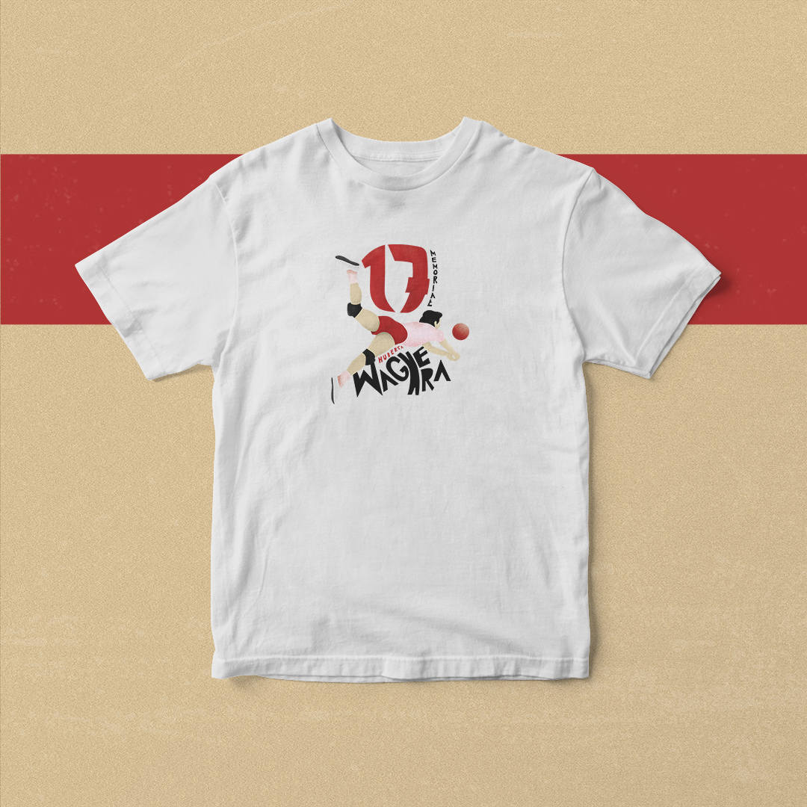

Łukasz Biernacki
Pierwsze
Portfolio
10.06.2020
Moim licealnym pragnieniem jest skończyć szkołę nie z pięknym świadectwem i wybitnie zdaną maturą,
ale z naprawdę dobrym portfolio. Jako że minął półmetek, a nawet cała druga klasa,
w końcu zebrałem się na odwagę stworzenia pierwszego prawdziwego portfolio.
Co mnie zmotywowało i zmusiło
Wiadomo, że pieniądze. Każdy człowiek jest materialistą,
a z kolei każdy nie żyjący na garnuszku rodziców grafik musi się stać dobrym sprzedawcą i przedsiębiorcą.
Niestety jestem jeszcze tym pierwszym, ale do końca liceum chce się w pełni usamodzielnić. Mam rok.
I tak, pieniądze są super, ale jest coś jeszcze bardziej satysfakcjonującego, zarezerwowanego dla
świrów grafików pracoholików, a to szczęście z wykonanych projektów. Przekonałem się o tym niewiele razy,
ale i tak się cieszę, że było tych kilka. Bo dla mnie nie ma nic lepszego, niż zobaczenie
swojego projektu w użyciu.
Koszulka dla Memoriału Huberta Wagnera

Koszulkę nosiła maskotka polskiej reprezentacji i pamiętam tę satysfakcję,
kiedy podczas oglądania meczu powiedziałem mamie: "Mamo popatrz na tę małpę, zaprojektowałem tę koszulkę".
Takie momenty pokazują mi, po co się to robi.
Dziękuje Krzyśkowi i Markowi z smmore, za danie mi szansy.
Okładka gazetki szkolnej

Możecie się śmiać. Gazetka szkolna, kto to czyta? A jednak, wybrałem moje liceum,
właśnie dlatego, żeby ilustrować gazetkę szkolną. To był strzał w dziesiątkę
razem z moją redaktorką naczelną i przyjaciółką Asią stworzyliśmy moim zdaniem najfajnieszą
gazetkę szkolną w Polsce (chętnie zobaczę lepszą), szprzedawaliśmy cały nakład w dwie godziny, nieduży co prawda, ale liczy się sam fakt.
Polecam całym sercem, szczególnie młodym grafikom, angażowanie się w tego typu projekty.
Nie od razu traficie na działanie non-profit, na które złapiecie całkowitą zajwakę.
Przyznam się, że nie dokońca potrafię współpracować z fundacjami, schroniskami, itp.
Właśnie w gazetce szkolnej czuję się niesamowicie kreatywny, a moje plony graficzne zaczęły wydawać owoce,
które mogłem zobaczyć w rękach innych uczniów.
Czyli mam już jakieś doświadczenie, ale jak je zdobyć
No trochę doświadczenia nabrałem, ale to kropla w morzu moich ambicji, a na pewno w morzu moich celów finansowych.
Nie da się stworzyć portfolio bez zrealizowanych projektów.
Można je zapełnić projektami do szafy, ale to tak jakbym
w środku lata wypełnił szafę zimowymi ubraniami.
Klient chce zobaczyć naszą skuteczność i przystosowanie do życia na prawdziwym rynku.
Dajmy sobie czas, nie od razu portfolio zbudowano. Nabierzcie trochę doświadzenia. Jeśli
jesteście jeszcze w szkole, wasza polonistka na pewno będzie wniebowzięta chęcią dołączenia do gazetki.
A jeśli nie gazetka, to może wasz piłkarski klub potrzebuje opieki w social mediach i nowego logo?
Kiedy i gdzie założyć portfolio
Moim zapalnikem do stworzenia portfolio było zmęczenie wysyłaniem go w pojedynczych zdjęciach,
a przede wszystkim nieskuteczność owego. Portfolio warto założyć wtedy
kiedy mamy się czym pochwalić. Dzięki temu, możemy mieć wszystko w jednym miejscu. Próbowałem różnych portali. Behance, Dribble
za nic nie mogłem osiągnąć tam ładu i składu. U mnie padło na stronę internetową. Jako że umiem je tworzyć
i lubię poklepać kod, był to dla mnie najlepszy wybór, ale czy się sprawdzi, to dopiero zobaczę. Równocześnie
traktuję Instagram jako portfolio, ale nie każde social medium jest dobre do wykonywanych przez nas prac.
Musimy znać naszą grupę odbiorców.
Co dalej?
Portfolio to dopiero początek. Żeby wykonywać upragnione zlecenia
musimy stać się sławni w interesującym nas półświatku. Zaczynam pisać tego bloga,
w którym pokazuje siebie jako osobę oraz moją estetykę, z którą możecie się tu zapoznać.
Zależy mi także na stworzeniu przyjemnego w internecie miejsca dla projektantów,
którego ja osobiście potrzebowałem, a nie potrafiłem znaleźć. Musimy dbać o nasze zasięgi,
być, jak wyżej napisałem, marketingowcami. Dać się poznać, dać się zatrudniać i zarabiać najeszczęśliwsze pieniądze w życiu.
Portfolio (Kliknij)